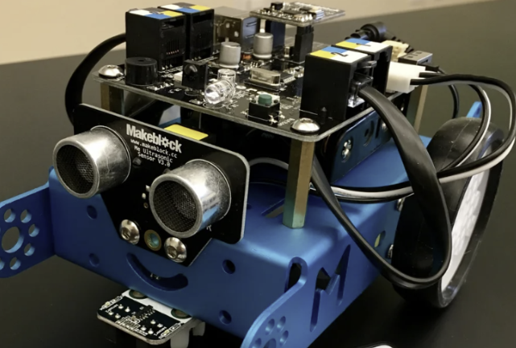

Arduino-based Ultrasonic Sensor Robot
High School Project — 2020
Led a team that developed an ultrasonic sensor robot designed to traverse an obstacle course and retrieve multiple objects autonomously. The robot utilized ultrasonic distance sensing for pathfinding and object detection, achieving high navigation accuracy. Won the award for ‘Best Rescue Robot’ at a provincial competition.
Key Highlights
- Developed an autonomous robot using Arduino Uno and C++.
- Implemented ultrasonic distance sensors for obstacle detection and object retrieval.
- Designed an optimized control algorithm for smooth navigation through complex paths.
- Integrated DC motors and servo actuators for precise motion control.
- Won Best Rescue Robot in a provincial robotics competition for performance and design innovation.
Tools Used
Arduino | C++ | Ultrasonic Sensor | Servo Motor